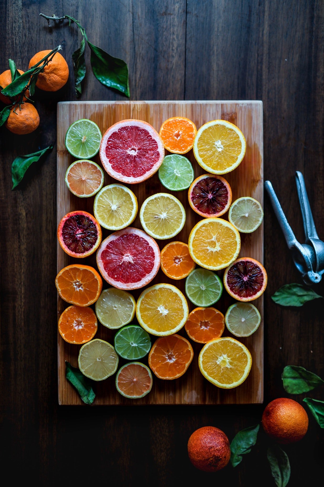

html에 이어서 배울 과목이다. 여기까지 오는 데에 대략 한 달이 안 됨을 예상하고 있다. 대략 10월 중순이나 말 안에 이 과목을 완수할 예정이다. html을 스타일리쉬하게 바꿔주는 역할을 하는데, css는 대체로 블로그 호스팅 업체의 제공된 탬플릿을 활용하는 터라 정확히 알고 있는 부분이 없이 스타일을 적용하는 일이 많았다. 앞으로는 내가 직접 작성하여 언어로써 손에 익는 것을 목표로 한다. 차후에 자바스크립트와 함께 연동하여,
css를 완벽히 이해하는데 주력하려 한다.
